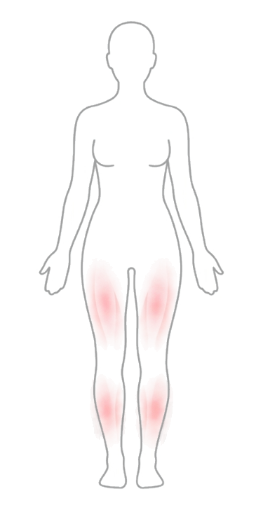

Dor, edema, sensibilidade e humor
Registre todos os dias e veja gráficos reais de evolução, não uma sensação vaga.
O Radar Lipedema cruza seus registros de dor e inchaço com o seu ciclo menstrual — e mostra o padrão real por trás das suas crises, não só a sensação de "acho que piorou".
Quero entender meu inchaço
Se marcou 2 ou mais, o app foi feito pensando exatamente nisso.
Seus hormônios oscilam e disparam o inchaço em silêncio. Quando você finalmente percebe, a crise já dominou o dia. Você tenta dieta, chá, drenagem — sem saber se algo funcionou de verdade ou se foi coincidência, porque ataca o sintoma sem saber em qual fase do ciclo ele nasceu.

Registre todos os dias e veja gráficos reais de evolução, não uma sensação vaga.
Veja como fase folicular, ovulação e TPM se relacionam com seus sintomas ao longo do tempo.
Acompanhe drenagem, fisioterapia, exercício e horas reais de uso da meia — e receba lembrete de quando trocar.
Coxas, panturrilhas e tornozelos separadamente — porque lipedema não afeta o corpo todo por igual.
Registre fotos por ângulo e compare com o tempo, sem precisar procurar no rolo da câmera.
Leve para a consulta a adesão real ao tratamento conservador e a evolução dos seus sintomas.
Esse valor sobe conforme mais pessoas entrarem.
R$ 27,90/mês
Cartão ou Pix. Cancele quando quiser.
Assinar mensalDe R$ 334,80
R$ 238,80/ano
Pagamento à vista (cartão ou Pix). Equivale a R$ 19,90/mês.
Assinar anualAponte sua dor, edema e sensibilidade num painel simples. Leva menos de 2 minutos por dia.
O app relaciona seus sintomas com a fase do seu ciclo menstrual automaticamente — sem planilha, sem caderno.
Veja em quais dias e fases seus sintomas costumam piorar, com gráficos que comparam períodos reais.
Gere um PDF com sua adesão ao tratamento e evolução dos sintomas — leve isso pra próxima consulta.
Avalie dor, edema, sensibilidade e humor em um painel de 0 a 10, todos os dias, em menos de 1 minuto.
Registre drenagem, fisioterapia, exercício e horas de uso da meia de compressão — com lembrete de troca.
Gere PDF com o score de evolução ou um relatório de adesão ao tratamento, pronto pra consulta médica.
Informe a data da sua menstruação e acompanhe em qual fase do ciclo você está a cada dia.
Cruza sintomas com o ciclo automaticamente
Gráfico de evolução dos sintomas
Relatório em PDF pra consulta médica
Lembrete de troca da meia de compressão
Leva menos de 2 minutos por dia
Comparado a anotar num caderno, tentar guiar de memória, ou montar isso numa planilha própria.

O Radar Lipedema está em fase de lançamento: preferimos ser honestas sobre isso a inventar números que não existem. O que existe de verdade: seus registros ficam salvos com segurança, você pode exportar seus dados a qualquer momento e apagar sua conta e tudo relacionado a ela quando quiser, direto pelo app.
"Ficou muito bom! Vai ajudar muito."
Geovanna Guimarães
"Ficou muito estruturado. Ajuda bastante a não perder o ciclo menstrual."
Nayara Barcelos
"Acompanhando dia a dia, ajuda muito na questão do inchaço e nos insights."
Divina Maria
Não. As telas são simples e visuais: sliders de 0 a 10, botões e listas de marcar — sem planilha, sem configuração complicada.
Sim, direto do navegador do seu celular — não precisa baixar nada de loja de aplicativo. Você também pode adicionar o atalho à tela inicial, que passa a abrir como um app.
O app se adapta: ele foca na relação entre os dias de sangramento que você registra e os seus sintomas, não em um calendário fixo.
Sim. Mesmo com o ciclo regulado por hormônio sintético, seus sintomas físicos continuam sendo registrados e cruzados normalmente.
A partir do segundo registro o app já compara tendências. Quanto mais dias você registra, mais claro fica o padrão dos seus sintomas.
Sim. Ficam salvos com segurança na sua conta, você pode exportar tudo quando quiser e apagar sua conta e todos os dados permanentemente, direto pelo app.
Pare de tentar adivinhar o que o seu corpo vai fazer amanhã.
Quero entender meu inchaço